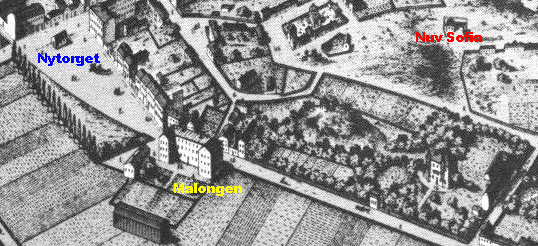
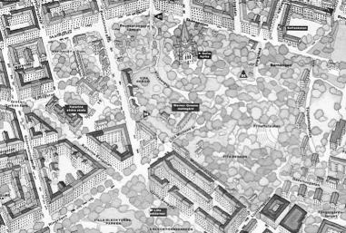
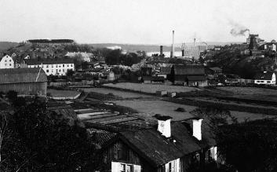
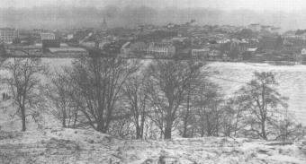

|
I slutet av 1600-talet anlades många manufakturer i Stockholm. På östra Södermalm lokaliserades de intill stränderna kring Hammarby sjö, Nytorget och Skanstull. Den ojämförligt största branschen var textilnäringen och det största företaget klädesfabriken vid Barnängen. Tidvis sysselsattes här uppemot 800 personer. Anläggningen kom, med några korta avbrott, att finnas kvar i nära 300 år.
 Den som främst gjorde Bamängsnamnet känt var Jacob Gavelius - släkten var från Gävle, därav namnet. Gavelius började som köpman. När det 1686 beslöts att endast svenskt kläde fick användas till arméns uniformer skaffade han sig manufakturprivilegier och satte i gång egen klädestillverkning. Han började i slutet av 1600-talet köpa upp tomter på Söder i konkurrens med vantmakaren - klädesfabrikören - Leijonancker. År 1688 övertog han dennes fabrik vid Nytorget - den byggnad som nu är känd som Malongen. För att kunna utvidga sin verksamhet köpte han också tomter på Barnängsområdet.
År 1848 övertog Hierta Barnängsfabriken och började tillverkning av siden, bomull och andra tyger. Textilfabriken gick emellertid inte så bra. År 1867 lades tillverkningen ner. Tre år senare, 1870, började Stockholms Bomullsspinneri- och Väfveriaktiebolag sin verksamhet. Fabriken blev kvar ända till 1952, då företaget flyttade till Norrköping och den textila epoken vid Barnängen upphörde. Färgerierna växte upp intill väverierna vid Hammarby sjö. Den mest kände av färgarna var Hans Westman. Han började som vävare och färgare redan några år innan Gavelius kom till trakten. Så småningom övergick han till att färga färdigt gods - bland annat hade han till uppgift att ge karolinernas uniformer den rätta blå färgen. Några av färgerierna intill Hammarby sjö fanns kvar ända in på detta sekel. De talrika industrierna inom östra Södermalm innebar många arbetstillfällen. Detta borde ha skapat ett visst välstånd åt traktens folk. Inställningen till arbetskraften var emellertid cynisk. En fattig befolkning var näringslivets största tillgång. Speciellt väveriarbetet var mycket dåligt betalt. Fabriksproletariatet på Söder hade det värst. Strejker var förbjudna och lönerna låga. Tog arbetarna inte emot den ringa lön de erbjöds kunde de fängslas för lösdriveri. De bodde i urusla bostäder och deras liv var oftast fyllt av svält och sjukdom. De eländiga förhållandena bestod under hela 1700- och 1800-talet och en bra bit in på detta århundrade. Författaren Gustaf af Geijerstam gjorde år 1894 en välfärdsundersökning. Han berättar bland annat en del om Barnängsområdet. Förhållandena där anser han hör till de mest beklagansvärda. Läget är nästan som ute på landet, husen kan se ut som små sommarnöjen omgivna av lövskog och sjö. Men det finns inte vatten eller avlopp i arbetarbostäderna. Stanken av fattigdom står kring kåkarna. Många, särskilt kvinnliga arbetare, bor inneboende, en del i samma rum som sju-åtta andra.
 Ur Nära inpå Stockholm, Magdalena Korotyñska, 1998 Bergets äldsta kända namn tycks ha varit Kråkberget. År 1657 nämns en Mester Bengt Pederson bagares väderkvarn upp på Kråkberget. 1727 omtalas berget såsom »det ännu så kallade Gavelii Qvarnbärget«. Namnet Vita Bergen är belagt 1819. Mest troligt är att namnet anspelar på berggrundens färg på något framträdande ställe av det förr kala berget. En annan, mindre sannolik förklaring, är att namnet skulle bero på att man på berget lagt ut lintyger till blekning. Vid namnrevisionen 1885 fastställde man »Hvita Berget« såsom namn på »parken i Hvita Berget«. År 1967 ändrades namnet till Vita Bergen. Hvita Berget blev känt som en av stadens fattigaste utkanter. Sluttningarna blommade här och var men själva berget låg kalt. I skrevorna låg eländiga skjul och kåkar - en bostadsslum. Den klassiska skildringen av förhållandena i Vita Bergen är August Strindbergs i Röda Rummet (1879): Det var ett gammalt envånings trähus, som klättrat upp på en bergknalle och som nu såg ut som om det hade höftsjukan; det var skäckigt som om det hade haft spetälskan, ty det skulle en gång målas, men det kom att stanna vid spacklingen; det såg eländigt ut på alla sätt, och det var knappt att man kunde sätta tro till brandförsäkringsmärket, som satt där och ärgade och lovade att en fenix skulle kunna stiga upp ur den brasan. Vid husets fot växte maskrosor, brännässlor och trampgräs, allesammans människans trogna följeslagare i nöden; och gråsparvar badade sig i den glödheta mullen som stänkte om dem, och barnungar med stora magar och bleka anleten, vilka sågo ut som om de föddes med 90 procent vatten, bundo sig halskedjor och armband av maskrosstänglarne och sökte för övrigt förbittra varandras sorgliga tillvaro genom att ofreda och okväda varandra. Falk och Ygberg gingo upp för en sviktande och gnisslande trätrappa och kommo in i ett stort rum, i vilket bodde trenne hushåll, vilka indelat rummet med kritstreck i tre kretsar. I två av dessa drevos yrken, av en snickare och av en skomakare; den tredje kretsen var uteslutande ägnad åt familjelivet.
Project Runeberg, Wed Aug 9 21:49:38 1995 http://www.lysator.liu.se/runeberg/rodarum
 
År 1896 går en annan vandrare från Nytorget in i Vita Bergen. Han berättar: Härifrån kommer man in på oländiga bergknallar med frodigt gräs mellan hällarna och smutsvatten i sänkorna, kommer in på vägar som ha gat- och grändnamn men där aldrig ett åkdon kommit fram. Detta är Hvita Berget, Stockholms fattigaste och mest vanlottade trakt. Här är säkert allt sig likt som det var för tjugo eller trettio år sedan - det enda som tillkommit är väl gasoljelyktorna. Träkåkarna äro låga och mörka, ibland ha de fönsterna ända nere vid marken, gårdarna äro smutsiga, planken ärggröna av ålder. Från slutet av 1800-talet finns också en mustig berättelse av den som »kulturhistorisk meddelare« betecknade Per Ludvig Lindgren - en gammal hamnarbetarförman i Stadsgården: Varenda år däroppe hadde di gemensam fest med di som bodde i småkåkarna i Vita berget, å de va riktia sjöslag. Kors i jissinamn vad de va fest. Kärringarna va fulla som spruter å ungarna söp å kararna låg dödfulla. Å ingen polis fanns de. De va rena vildmarken. Cigarrmakerskorna de va böner de, som kunde ta en sup lika bra som en kar. Och om huset Nya gatan 20 - nuvarande Skånegatan - som revs då gatan breddades berättar Lindgren: Där i huset bodde det mest bara cigarrmakarskrollor å hamnjobbare och bergsprängare. Det fanns inga lägenheter annat än rum och kök, sex lägenheter i varje uppgång. Kärringarna hade hemslöjd, fick någe slags garn från Barnängens bomullsspinneri. Balar som di drog ut fibrerna ur och fläta ihop te halvmeterlånga matter i platting. Di tog en krona styck för dom och dom såldes i affärerna. När mattan var färdig så sveddes den med anilin. Man kunde ha den till dörrmatta. Dörrmattsfabrikationen var sista utvägen då nöden blev för påträngande och husfaderns alkoholism gjorde honom arbetsoduglig för veckor. Kring industrierna och efter infartsvägarna till stadens centrala delar växte också krogarna upp. Redan medan Gavelius verkade vid Barnängen blev de så många att han klagade över att kroglivet gjorde trakten osäker. En känd utkantskrog var Faggens vid nuvarande Gaveliusgatan.
 Utsikt från Hammarby gård över den isbelagda Hammarby sjö mot Vita Bergen. Ca 1890
Myndigheterna var nog medvetna om att något måste göras åt nöden i Vita Bergen som hade förvärrats av 1870-talets bostadsbrist och allmänna ekonomiska svårigheter. Det blev emellertid privata och kyrkliga insatser som främst kom att påverka förhållandena.
Ett skyddshem för »fallna kvinnor« ställdes i ordning i ett särskilt litet hus intill bibelkvinnohemmet. Verksamheten växte och så småningom fick man disponera den stora Groenska malmgården. Våren 1883 tillkom ett sjukhem. Barnhemsverksamhet bedrevs i särskilt för ändamålet förhyrda hus. När hjälpverksamheten var som störst drevs åtta olika hem - Elsa Borgs imperium. Elsa Borg avled 1909. Hennes livsgärning blev ett hängivet arbete för Vita Bergens fattiga. I senare tid har ett omfattande socialt arbete bedrivits genom Sofia församling.
Även Per Anders Fogelströms insatser har betytt mycket. Av många betraktas han som den mest geniale ungdomsledaren
på Söder under 1930- och 40-talet. Han var den ledande själen och den oförbrännelige idégivaren var han än verkade. Han
var bl.a. den sammanhållande kraften i Vitabergsklubben, som höll till i det sedan länge nedbrunna Ceders Café i Vitabergsparken.
Inom Vitabergsområdet finns några äldre hus och områden som bevarats som kulturreservat. Det är Werner Groens malmgård och bebyggelsen efter Malmgårdsvägen, Faggens krog och Färgargården, några hus vid Stora Mejtens gränd och Skånegatan, husen vid Mäster Pers gränd och Bergsprängargränd samt husen vid Nytorgets östra sida och »Malongen«.

I helgedomens skugga |

{kind=link}
{kind=link}
{kind=link}
{kind=link}
{kind=link}
{kind=link}
{kind=link}